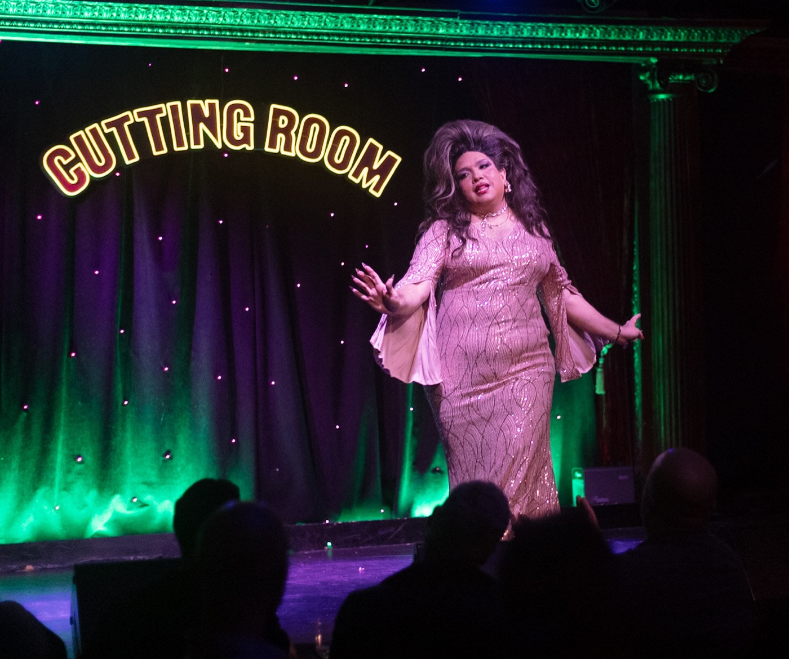
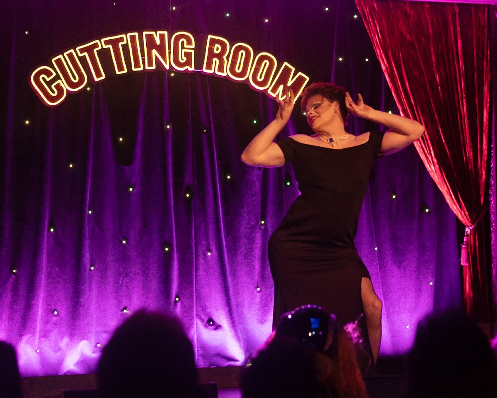
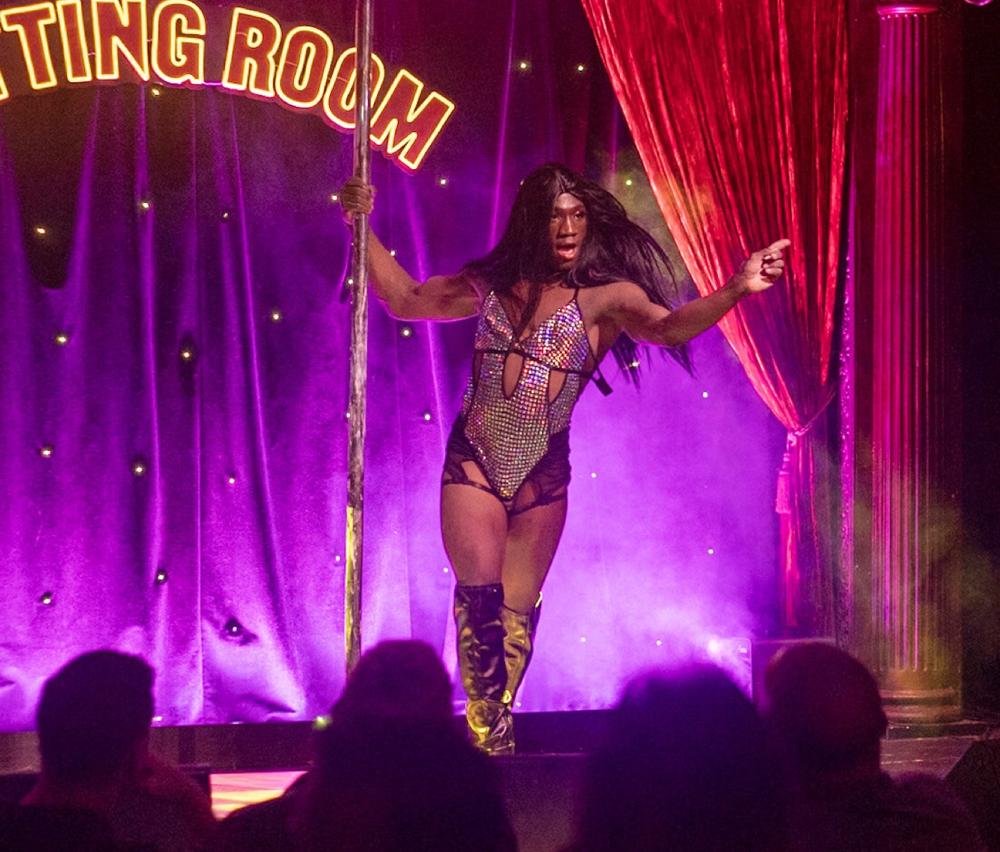
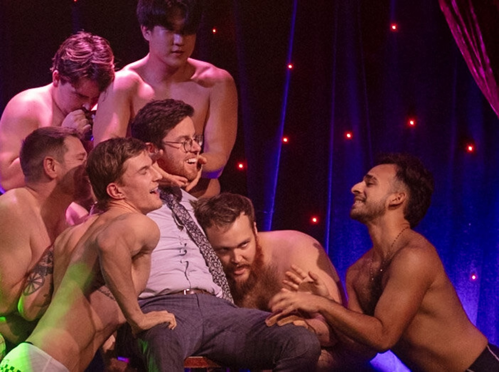

Gotham Knights Rugby presents
WED NOV 18 · 7PM · $35
Gotham Knights Rugby presents · Design guide
The Next Generation · Season 25
The Drag / Showtime register: the house lights going down. A variant of the club's design system, used only to promote the drag show fundraiser.
WED NOV 18 2026 · THE CUTTING ROOM · NYC · GO.GOTHAM.RUGBY/DRAG
This page is self-contained: everything a designer needs for show artwork is here, including the parts inherited from the club system. The club guide is the source for everything else the club makes.
The register
A navy house with the spectrum lit on stage.
The club ships two registers — Loud / Matchday (navy field, gold shouting) and Professional / Clubhouse (warm paper, navy ink). The drag show adds a third: the house lights going down. It is not a separate brand — the same club, in a third register. Loud / Matchday is a navy field with gold shouting across it. Drag is a navy house with a spectrum lit up on the stage.
What carries over — non-negotiable
- The crest and the wordmark. Untouched, unrecolored, no spectrum fills.
- Navy as the anchor. The show is darker, not different.
- Gold as the thread back to the club. The link and highlight color even though violet leads — the strongest signal this is the rugby club putting on a show.
- The 4px spacing spine, 2px strokes, low athletic radii. Nothing gets bubbly.
- The voice — bold, warm, a little cheeky; inclusive structurally, not decoratively.
What changes
- The spectrum becomes structural. Frames, marquee rules, the lead accent — the one place the club's "Pride, not rainbow-everything" rule is deliberately relaxed. Still never wallpaper.
- The house goes darker.
--house-black(#04091A) sits below the club's darkest navy — a theater with the lights down, not a pitch at night. - Violet and pink ramps arrive. Defined locally; the club has no violet scale.
- The show title gets a marquee lockup. Harbour Bold, wordmark tracking — see Type.
We are
Camp, deliberate, body-positive, cheeky — a rugby club in heels. Bad crops are craft: the parody-collage joke is deliberate and codified.
We are not
Sleazy, mean, or rainbow-wallpaper. Never punching down, never leaning on tired gay-bar clichés.
For builders: link the club's styles.css plus tokens/drag.css and set data-theme="drag" on <html> or any container — a single dark show panel can sit inside an otherwise Clubhouse-register page. Every club component rethemes without a fork. The club's canonical system is never written to from here.
Voice & copy
Same mouth, more lipstick.
The club's voice carries over whole: bold, warm, a little cheeky; "we" and "you"; inclusivity structural, never decorative. The show turns the cheek up. It is camp and deliberate, a rugby club in heels — and it is still a fundraiser, so every piece says who's asking and why.
Loud · the hype line
LIGHTS DOWN. HEELS ON.
GOTHAM DRAG SHOW · WED NOV 18.
Warm · the ask
"Every ticket keeps the club on the pitch. Come for the show, stay for the squad — and bring whoever needs a night like this."
Lines that always ship
Do
- Camp it up — the parody is the joke, and the joke is on us, never on the audience
- Say drag, queer and fundraiser plainly
- Keep hype lines short and stacked; put the facts in the mono face
- Use stand-in names (Scarlet Ruck, Velveteen, Miss Conduct…) until the cast is confirmed and cleared
- Give a CTA one verb: Get tickets
Don't
- Go sleazy — innuendo is fine, cruelty and body-shaming are not
- Lean on tired gay-bar clichés or "yas queen" filler
- Publish a real performer's name, photo or pronouns without their sign-off
- Bury the price, date or venue in a decorative lockup
- Use emoji as design; the energy comes from type and color
The marks on the house
The crest is the sender. It doesn't dress up.
The club's crest, lockups and wordmark are used exactly as the club uses them — no spectrum fills, no violet recolor, no bad crops. On the house black use the 2-color shield (navy and gold read fine on it) or the all-white knockouts. The show title is the event's lockup; the crest says who's throwing it.
Every variant (2-color, navy, black, white; SVG and PNG) is in the logo pack. Clear space is 30% of the crest's height on every side; the crest never goes below 24px / 0.25in and the horizontal lockup never below 120px / 1.25in wide.
Never do this
✕Don't frame or fill the crest with the spectrum. The spectrum is the show's; the crest is the club's.

✕Don't recolor to violet or pink. Navy and gold, or white.
✕Don't bad-crop, tape or tilt the crest. The paste job is for cast cutouts.
✕Don't add glows, neon or marquee bulbs to the lockup. Bulbs frame the sheet, not the logo.
Color
Dark house, three accents.
Violet leads, pink winks, gold stays the thread back to the club. The room itself is --house-black. Violet is too dark on the house black to carry small text — it takes borders, fills and large type; gold carries links and small emphasis.
Violet ramp — defined for the show
Click any swatch to copy its hex. 500 is the lead and equals the club's --pride-violet.
Pink, house, and the club thread
The spectrum — a rule, not a wallpaper
--spectrum — six hard bands, the show's signature stroke. It carries rules, frames and marquee bands; it never fills a surface.
Status colors — inherited
Semantic re-pointing under data-theme="drag"
| Token | Points to | Role |
|---|---|---|
--surface-page | --house-black | the room itself |
--accent | --violet-500 | lead accent — fills, borders, large type |
--accent-2 / --accent-3 | --pink-500 / --gold-500 | the wink / the club thread |
--text-link | --gold-500 | gold survives as the link color |
--border-brand | --violet-500 | components retheme for free |
Primitives vs. re-pointing — a real bug class. Palette primitives (the ramps, --house-black, --spectrum) live at :root; only semantic aliases live in the theme block. A primitive scoped to the theme silently renders as nothing wherever the attribute is absent.
Type
The marquee rule.
Show titles are set in Harbour Bold, the wordmark face, at wordmark tracking. The club reserves Harbour for the logo wordmark — let loose, the brand reads "ye olde". The marquee is not an exception: a show title is a wordmark. It is the event's lockup.
The marquee — one per composition
The Next Generation · Season 25
Do
- Set the show title once, at poster scale, in Harbour Bold at wordmark tracking (
--font-marquee/.gkd-marquee) - Pair it with the spectrum rule beneath
- Keep it ALL CAPS, tight, as drawn
Don't
- Use Harbour for headings, body, pull quotes, or a second element on the same surface
- Use Harbour Decor — the blackletter cut failed legibility testing and is deliberately not bundled
- Rebuild the title in another face or loosen the tracking
Everything else keeps the club's roles
Showtime at the Cutting Room
Scarlet Ruck ◆ Velveteen
WED · NOV 18 · DOORS 7PM · $35
Harbour is not served as a webfont on this site; the marquee specimens above are rendered images. Set show titles from the font files in the design system when producing artwork.
Type scale · inherited, 1rem = 16px
The same ladder, on a dark stage.
Sizes, leading and tracking are the club's. Only the marquee slot is new, and it sits above the scale at poster size rather than on it.
marquee · Harbourposterdisplay-2xl · athletic88pxLIVE
display-xl64pxShowtime
display-lg · athletic48pxGet tickets
display-md36pxThe lineup
h132pxA rugby club in heels
h224pxSection heading
h320pxSubsection title
body-lg18pxEvery ticket keeps the club on the pitch.
body16pxDoors at seven. Bring whoever needs a night like this.
body-sm14pxSupporting copy, captions, the 501(c)(3) line.
mono · facts14–20pxWED · NOV 18 · DOORS 7PM · $35
overline11pxGotham Knights Rugby presents
Leading & tracking
Headlines run tight — --lh-tight 0.95 to --lh-heading 1.18 with -0.02em tracking. Body breathes at --lh-body 1.55. Overlines are the only all-caps in the modern voice, at +0.16em. The marquee uses the wordmark's -0.05em. On a venue screen nothing that must be read across the room drops below --type-min-venue (4cqh).
Spacing, radius & strokes · inherited
Nothing gets bubbly.
The 4px spine, the low athletic radii and the confident 2px stroke carry over untouched. The show adds exactly one stroke of its own: the 8px spectrum rule.
Spacing scale
Corner radius — low & athletic
xs · 3
sm · 6
md · 10
lg · 16
xl · 24
pill
6–10px for most UI, 16px for feature cards. Pills only for chips, tags and avatars. Printed posters and social tiles have square corners — the radius is for screens.
Strokes
hairline · 1px
base · 2px
bold · 3px · gold keyline
spectrum frame · 3px
Hairlines for quiet dividers, 2px for cards and buttons, the 3px gold keyline for a framed sheet. The spectrum frame is the loudest stroke in the register — one per composition, and never on the same frame as the gold keyline.
Elevation & focus
shadow-md · cards
shadow-glow · the violet CTA
shadow-gold · gold CTA on navy
Shadows stay navy-tinted and restrained. The violet glow is reserved for the show's primary CTA; the gold glow for a gold CTA on the house. Focus rings are a 3px gold outline at 2px offset, same as the club.
Patterns
Theater textures — single moments only.
Same discipline as the club's patterns: loud by nature, used as frames, bands and single moments — never wallpaper. The club's .gk- patterns all still work under this theme.
Doors 7pm
Framed
Spotlight
Sequin
head, pasted obviously
The club's patterns, in the dark
Discipline. Dark house, three accents, spectrum as a rule. Use .gkd-badcrop on cutout heads and prior-art frames only — never on real photography that needs to look good.
Photography
Lights down, bulbs warm.
The stage at The Cutting Room already looks like the register: a dark house, the marquee sign, colored stage wash over a starlit curtain. Shoot and pick for that — performers lit by the room, not by flash — and let the photo carry the color. Real photography stays clean; the bad-crop treatment is for cutouts only.




Do
- Keep the house dark around the subject — crop to the stage
- Let the venue's colored light stand; don't neutralize it
- Use the navy scrim from the club system when type must sit on a photo
Don't
- Flash-light a performer into a flat snapshot
- Put the spectrum rule on top of a photo that already has the stage wash
- Apply the bad crop to a photo that needs to look good
Components · rethemed for free
The club's parts, under the house lights.
Every club component reads the semantic tokens, so under data-theme="drag" it rethemes without a fork: violet takes the primary action, gold stays the thread, surfaces drop to navy-800 on the house black. This is what they look like — for ticket pages, lineups and the show's web and screen UI.
Button
Violet primary with the stage glow; gold secondary for the club thread; outline and ghost on the house. Labels UPPERCASE; hover lifts 1px, press nudges down.
Badge
Tiny uppercase marker — act status, "SOLD OUT", "MC", "HEADLINER".
Headliner
MC
Bonus
On sale
Last few
Sold out
TBA
Tag
Rounded chip for filters and categories. Selected goes violet.
Drag
Boy band
Raffle
21+ ✕
SectionHeading
Eyebrow, title, gold rule, optional description — gold rule stays gold.
The lineup
Five acts. One boy band. No notes.
Doors 7pm, show 8pm. Performer names below are stand-ins.
Card
Navy-800 surface on the house. Featured cards take a violet top-rule; the gold top-rule is for club-thread content (sponsors, the ask).
Reigning Queen · Velveteen
Headliner · closes the first half
A fundraiser for Gotham Knights RFC
Registered 501(c)(3) non-profit
Stat
Big mono figure + uppercase label. Gold figures; violet for the show's own numbers.
25
Seasons
$35
Tickets
7PM
Doors
Input
Dark fields on navy-900 with the gold focus ring. Same anatomy as the club.
Email
you@club.nyc
For your tickets, nothing else.
Name on the door
Alex Rivera
Focused — gold ring.
Quantity
Required
This field is required.
LineupRow
The club's FixtureRow, re-cast: slot time in mono, act and role, status badge. Violet left accent for acts, gold for the club's own segments.
8:00
PM
Scarlet Ruck
MC
8:40
PM
Velveteen
Headliner
9:15
PM
Gotham Boy Band
Bonus
Poster & social layouts
Six parts, top to bottom.
Every show sheet is the same stack, whatever the canvas: bulbs, sender, marquee, stage, lineup, ticket band. The poster is the reference composition; the social cuts re-flow it inside their safe areas.
Gotham Knights Rugby presents
The Next Generation · Season 25
open stage · performer photography
Scarlet Ruck ◆ Velveteen ◆ Miss Conduct
Dame Shirley Knot ◆ Lady Lineout
Dame Shirley Knot ◆ Lady Lineout
WED · NOV 18 · DOORS 7PM · SHOW 8PM · $35
THE CUTTING ROOM · 44 E 32ND ST · GO.GOTHAM.RUGBY/DRAG
THE CUTTING ROOM · 44 E 32ND ST · GO.GOTHAM.RUGBY/DRAG
A fundraiser for Gotham Knights RFC · 501(c)(3)
The show poster · 1080×1350 (4:5) and 3:4 print
- Marquee rule — warm bulbs open and close the sheet.
- Sender — "Gotham Knights Rugby presents", athletic caps, gold.
- Marquee lockup — the one Harbour element, spectrum rule beneath.
- Open stage — spotlight wash over the dark house, held for photography.
- Lineup — Gotham Black; stand-in names until confirmed.
- Ticket band — Spline Sans Mono facts, then the fundraiser line.
Source: posters/show-poster.html in the gotham-drag design system. Every color, space and stroke in it is a token from this page.
Social cuts & safe areas
Dashed boxes are the safe areas from the format tokens. Nothing that must be read goes outside them; the spectrum rule and bulbs may bleed. The square and the story are the two cuts the Next Generation template ships in — see Season 25.
Motion & output formats
Event and hold.
Three output classes: print/graphics, venue screen (projector or LED wall, 16:9) and social video (9:16). Motion is punctuation against stillness: the sheen crosses the crest in 16% of the loop, then sits still; the spark travels the rule once and waits. Continuous motion reads as a screensaver; event-and-hold reads as a stage.
--mo-event · 16% of the loopthen hold · 84%--mo-loop-short · 12s
The principle
--mo-event: 16%is the ceiling for a punctuating gesture — past ~20% it stops reading as an event.- One sanctioned exception:
gkd-house-swell— a slow warm swell reads as a room, not a widget. - Social video inverts it: a Reel has under a second to stop a thumb, so vertical hooks by
--mo-hook(400ms) and may run continuous motion.
The hard constraints
- If it moves, it is a CSS
@keyframesrule. The renderer drives every animation frame-by-frame; rAF loops, canvas, GIFs and video render as a frozen first frame. - Every duration must divide evenly into the loop period (
--mo-loop24s /--mo-loop-short12s), or the loop visibly jumps. - Size in
cqh/cqw, never px, inside.stage__canvas. Minimum legible sizes are tokens:--type-min-venue(4cqh),--type-min-venue-support(2.2cqh).
Broadcast timing — a separate scale from UI
| Token | Value | Use |
|---|---|---|
--mo-reveal / --mo-exit | 700ms / 500ms | entrances and exits — exits are always faster |
--mo-hold-short / --mo-hold / --mo-hold-long | 3s / 5s / 8s | the stillness between events |
--mo-loop / --mo-loop-short | 24s / 12s | loop periods; all durations divide into these |
--mo-hook / --mo-loop-social | 400ms / 8s | vertical video: everything essential on screen by the hook |
--dur-fast / --dur-base / --dur-slow | 120–320ms | stay for interfaces only |
Canvases & safe areas
Venue · 16:9projector, LED wall
Square · 1:1feed
Portrait · 4:5feed, taller
Poster · 3:4print, show poster
Vertical · 9:16reels, stories
Nothing that must be read goes outside title-safe (5% in from every edge; action-safe is 3.5%). Venue screens lose far more at the bottom than the top — keep 12% clear. Reels draw an action rail up the right edge (19%) and a caption block along the bottom (22%); Stories take 13% top and 16% bottom. Re-check on a real device before a big push.
This year's show · Season 25
The Next Generation.
Camp teen-drama DVD-cover key art on the club navy field: badly pasted cast cutouts with tape, a season banner, review pull-quotes, a ticket band. The scrapbook look belongs to this season only — the register rules above are permanent; this treatment is the 2026 costume.
Gotham Rugby presents
The Next Generation · Season 25
Cast reveal
TBA
TBA
Cast reveal
TBA
TBA
Cast reveal
TBA
TBA
Scarlet Ruck as MC · Velveteen as Reigning Queen
Miss Conduct · Dame Shirley Knot · Lady Lineout
Miss Conduct · Dame Shirley Knot · Lady Lineout
Bonus feature: Gotham Boy Band
WED · NOV 18 · DOORS 7PM · SHOW 8PM · $35
THE CUTTING ROOM · 44 E 32ND ST · GO.GOTHAM.RUGBY/DRAG
THE CUTTING ROOM · 44 E 32ND ST · GO.GOTHAM.RUGBY/DRAG
Anatomy, top to bottom
- Marquee rule — warm bulbs open the sheet; the spectrum rule closes it.
- Sender tag — "Gotham Rugby presents", gold, athletic caps, a little crooked.
- Marquee lockup — the one Harbour element on the surface, pasted at a tilt with a hard navy drop.
- Season banner — violet block, "The Next Generation · Season 25".
- Cast frames — bad crops with tape. Open slots are written as cast reveals so the layout works before confirmation.
- Lineup — Gotham Black; names in gold are the headliners.
- Bonus tag — the pink wink. One per sheet.
- Ticket band — Spline Sans Mono facts: date, doors, price, URL.
Stand-ins
Performer names on this page are placeholders. Keep stand-ins in all templates until the cast is confirmed and cleared for print.
Rules in force
- One Harbour lockup — the title — and nothing else in Harbour
- Spectrum as a rule: the band that closes the sheet
- Gold carries the facts; violet carries the season banner
- Bad crops are encouraged on cast frames — the paste job is the joke
- Gold keyline and sequin grain on the same frame — pick one
- Bad-crop a real photo that has to look good
- A second pink or violet block competing with the banner
- Carry the scrapbook look into club material — it's the show's, this year
Confirmed facts
Template formats
The Next Generation cover ships as a reusable template in the design system (templates/next-generation-cover/) in two cuts: square 1080×1080 for the feed and story 1080×1920, which re-flows the cast grid to two columns. Six cast frames accept dropped photos. Frame options: gold keyline or sequin grain — one frame, never both. The show poster (posters/show-poster.html, 1080×1350) keeps an open center for performer photography.
Before you export
The twelve-second check.
Run every sheet, tile and loop past this before it goes to print, to the venue or to socials. If one line fails, it isn't in the register yet.
- One Harbour element — the show title, at wordmark tracking, and nothing else in Harbour
- The crest is untouched — navy and gold or white; no spectrum, no tilt, no glow
- The spectrum is a rule or a frame, not a fill; a spectrum frame appears at most once
- Gold carries the facts; violet carries the action; pink appears once as the wink
- The sender line and the fundraiser line are both on anything that sells a ticket
- Facts in the mono face: Wed · Nov 18 · Doors 7pm · Show 8pm · $35 · The Cutting Room · go.gotham.rugby/drag
- Stand-in names only until the cast is confirmed and each performer has signed off
- Real photos stay clean; the bad crop is for cutouts and prior-art frames
- Nothing readable outside title-safe (5%); reels keep the right rail and bottom clear; venue keeps the bottom 12%
- Motion is @keyframes, every duration divides into the loop, and the event takes ≤ 16% of it
- Type ≥ 4cqh on anything read across a room
- The scrapbook look stays in Season 25 files — it does not travel to club material
Files & sources
Harbour Bold and Gotham Black are licensed faces. They live with the design system, not on this site — ask the club for the files rather than downloading look-alikes.